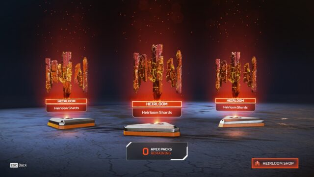

スパレジェいくら？！入手コストと注意点
投稿日：2025年6月11日
Apex Legendsにおける「スーパーレジェンドセット（通称スパレジェ）」は、レジェンド専用の近接武器スキンやボイスラインが含まれた超レアアイテムです。
入手には「スパレジェシャード」が必要で、これは通常のApexパックから2.5%以下の確率で排出されます。保証天井は500パックです。
つまり、課金のみで狙う場合は最大で約7万円前後の費用が必要となることも。イベント期間中に直接購入できる場合もあるため、情報をチェックして効率よくゲットしましょう。